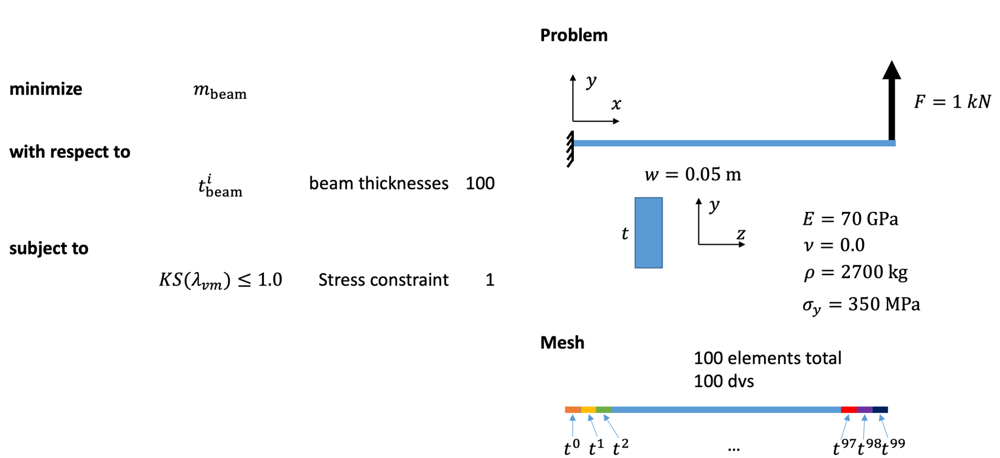

Beam optimization with MPhys¶
Note
The script for this example can be found under the examples/beam/ directory.
This example demonstrates TACS structural optimization capabilities. The optimization is setup using TACS' MPhys module, which acts as a wrapper for OpenMDAO. The beam model that we will be using for this problem is a rectangular beam, cantilevered, with a shear load applied at the tip. The beam is discretized using 100 beam elements along it's span.
The optimization problem is as follows: Minimize the mass of the beam with respect to the thickness of each element, subject to a max stress constraint dictated by the materials yield stress.
{kind=link}
By realizing that the stress at any spanwise cross-section in the beam as a function of the running moment can be found independently using:
An analytical solution for this problem can be shown to be:
First, we import required libraries, define the model bdf file, and define important problem constants:
import os
import matplotlib.pyplot as plt
import numpy as np
import openmdao.api as om
from mphys.core import Multipoint, MPhysVariables
from mphys.scenarios import ScenarioStructural
from tacs import elements, constitutive, functions
from tacs.mphys import TacsBuilder
# BDF file containing mesh
bdf_file = os.path.join(os.path.dirname(__file__), "beam_opt.bdf")
# Beam thickness (initial)
t = 0.05 # m
# Beam width
w = 0.05 # m
# Length of beam
L = 1.0
# Material properties
rho = 2500.0 # density kg/m^3
E = 70.0e9 # Young's modulus (Pa)
nu = 0.0 # Poisson's ratio
ys = 350e6 # yield stress
# Shear force applied at tip
V = 1e3
Next we define an elemCallBack() function.
This is a user-defined callback function for setting up TACS elements and element design variables.
We use the IsoRectangleBeamConstitutive class for the constitutive properties,
assign a design variable number for the thickness parameter, and return a Beam2 element class.
# Callback function used to setup TACS element objects and DVs
def element_callback(dvNum, compID, compDescript, elemDescripts, specialDVs, **kwargs):
# Setup (isotropic) property and constitutive objects
prop = constitutive.MaterialProperties(rho=rho, E=E, nu=nu, ys=ys)
# Set one thickness dv for every property group
con = constitutive.IsoRectangleBeamConstitutive(prop, t=t, w=w, tNum=dvNum)
# Defines local y/thickness direction for beam
refAxis = np.array([0.0, 1.0, 0.0])
transform = elements.BeamRefAxisTransform(refAxis)
# Pass back the appropriate tacs element object
elem = elements.Beam2(transform, con)
return elem
We define a problem_setup() function.
This function is called each time a new MPhys Scenario is created.
This function sets up the StaticProblem by adding fixed loads, modifying options, and adding eval functions.
Here we specify the beam mass (StructuralMass) and aggregated failure (KSFailure) as outputs for our analysis and add our 1 kN shear load.
def problem_setup(scenario_name, fea_assembler, problem):
"""
Helper function to add fixed forces and eval functions
to structural problems used in tacs builder
"""
# Add TACS Functions
problem.addFunction("mass", functions.StructuralMass)
problem.addFunction(
"ks_vmfailure", functions.KSFailure, safetyFactor=1.0, ksWeight=100.0
)
# Add forces to static problem
problem.addLoadToNodes(101, [0.0, V, 0.0, 0.0, 0.0, 0.0], nastranOrdering=True)
Here we define our Multipoint (essentially an OpenMDAO Group) which will contain our analysis Scenario.
To do this, we instantiate the TacsBuilder using the element_callback and problem_setup we defined above.
We create OpenMDAO Component's to feed design variable and mesh inputs to the Scenario component.
We use this builder to create an MPhys StructuralScenario.
class BeamModel(Multipoint):
def setup(self):
# Initialize MPHYS builder for TACS
struct_builder = TacsBuilder(
mesh_file=bdf_file,
element_callback=element_callback,
problem_setup=problem_setup,
write_solution=False,
)
struct_builder.initialize(self.comm)
dv_array = struct_builder.get_initial_dvs()
# Create independent variable component to control design variables for problem
dvs = self.add_subsystem("dvs", om.IndepVarComp(), promotes=["*"])
dvs.add_output("dv_struct", dv_array)
# Add mesh component
self.add_subsystem("mesh", struct_builder.get_mesh_coordinate_subsystem())
self.mphys_add_scenario(
"tip_shear", ScenarioStructural(struct_builder=struct_builder)
)
self.connect(
f"mesh.{MPhysVariables.Structures.Mesh.COORDINATES}",
f"tip_shear.{MPhysVariables.Structures.COORDINATES}",
)
# Connect dv component to input of structural scenario
self.connect("dv_struct", "tip_shear.dv_struct")
At this point we setup the OpenMDAO Problem class that we will use to perform our optimization.
We assign our BeamModel to the problem class and set ScipyOptimizeDriver.
We define our design variables, constraint, and objective.
Finally we run the problem driver to optimize the problem.
# Instantiate OpenMDAO problem
prob = om.Problem()
prob.model = BeamModel()
model = prob.model
# Declare design variables, objective, and constraint
model.add_design_var("dv_struct", lower=0.001, upper=0.1, scaler=100.0)
model.add_objective("tip_shear.mass", scaler=1.0)
model.add_constraint("tip_shear.ks_vmfailure", lower=0.0, upper=1.0, scaler=1.0)
# Configure optimizer
prob.driver = om.ScipyOptimizeDriver(debug_print=["objs", "nl_cons"], maxiter=1000)
prob.driver.options["optimizer"] = "SLSQP"
# Setup OpenMDAO problem
prob.setup()
# Output N2 representation of OpenMDAO model
om.n2(prob, show_browser=False, outfile="beam_opt_n2.html")
# Run optimization
prob.run_driver()
After the optimization completes the user should see a print out to screen like shown below.
>>> Optimization terminated successfully (Exit mode 0)
>>> Current function value: 1.5534716448382722
>>> Iterations: 138
>>> Function evaluations: 372
>>> Gradient evaluations: 138
>>> Optimization Complete
>>> -----------------------------------
Once the optimization is complete we can post-process results.
We can write our optimized beam model to a BDF file so they can
be processed in other commonly used FEM software.
The f5 solution file at each optimization iteration can also be converted to a Tecplot or Paraview files using f5totec or f5tovtk, respectively.
# Write optimized structure to BDF
bdf_out = os.path.join(os.path.dirname(__file__), "beam_sol.bdf")
prob.model.tip_shear.coupling.write_bdf(bdf_out)
Finally, we can plot the optimized thickness distribution using matplotlib and compare against the expected optimal result from beam theory.
# Get optimized solution variables
x = prob.get_val(f"mesh.{MPhysVariables.Structures.Mesh.COORDINATES}", get_remote=True)[
:-3:3
]
t_opt = prob["dv_struct"]
m_opt = prob["tip_shear.mass"]
# Get analytical solution
t_exact = np.sqrt(6 * (L - x) * V / w / ys)
# Compute max thickness value
t0 = np.sqrt(6 * L * V / w / ys)
# Plot results for solution
plt.plot(x / L, t_opt / t0, "o", x, t_exact / t0)
plt.legend(["optimized", "analytical"])
plt.ylabel(r"$\frac{t(x)}{t_0}$", fontsize=16)
plt.xlabel(r"$\frac{x}{L}$", fontsize=16, labelpad=-5)
plt.title("Optimal beam thickness profile")
plt.text(0.05, 0.25, r"$t_0 = \sqrt{\frac{6VL}{w\sigma_y}}$", fontsize=12)
plt.show()
{kind=link}